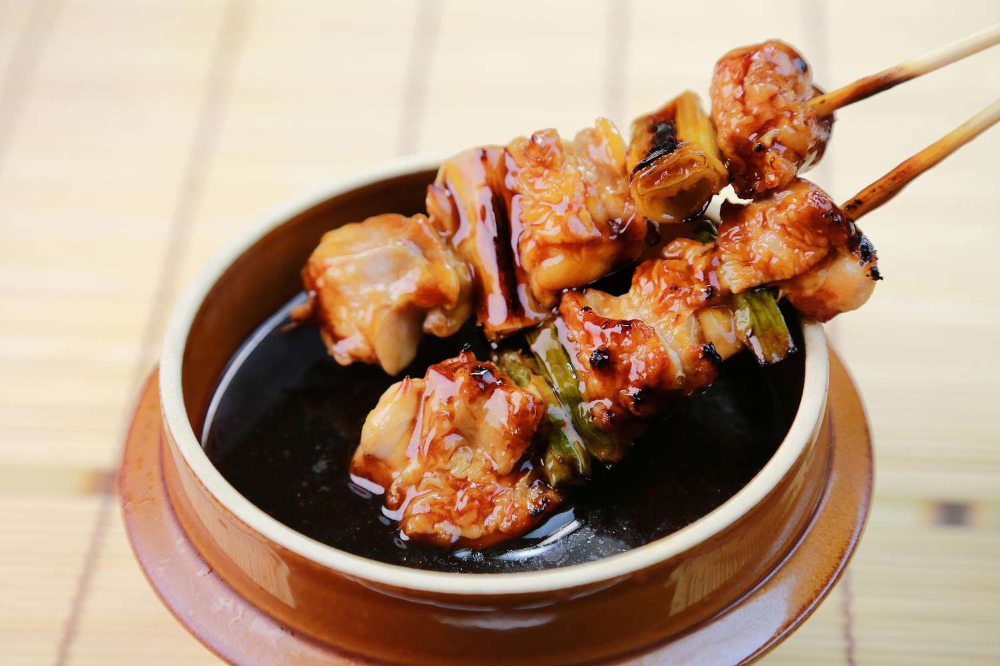

Chicken Yakitori

Description
Grilled Japanese chicken thigh skewers with scallions in a tare sauce.
Ingredients
- One pound boneless chicken thigh
- Two bunldes of scallion whites, greens removed and saved
- Kosher salt
- black or white pepper
- sesame seeds
-
Tare Sauce
Directions
- In a large bowl, toss chicken pieces with 2 teaspoons kosher salt and a few grinds of pepper.
Thread 2 to 3 pieces of chicken onto a skewer (enough to add up to around 1/2 to 3/4 inch when pressed tightly together), then thread a segment of scallion onto skewer.
Continue alternating every few pieces of chicken with scallion until chicken and scallions are used up, using as many skewers as necessary.
Make sure all the meat and scallions are tightly packed.
- Light 2/3 chimney full of charcoal. When all the charcoal is lit and covered with gray ash, pour out and arrange the coals on one side of the charcoal grate.
Set cooking grate in place, cover grill, and allow to preheat for 5 minutes.
Alternatively, set half the burners on a gas grill to medium-high heat setting, cover, and preheat for 10 minutes. Clean and oil the grilling grate.
- Place chicken skewers directly over the hot portion of the grill, cover, and cook, turning frequently, until chicken is well browned, scallions are tender, and a piece of chicken looks cooked when removed and cut in half with a knife, about 10 minutes. Season with additional salt and pepper 2 to 3 times during the cooking process.
- Brush chicken and scallions with teriyaki glaze and cook for 30 seconds. Turn, brush second side with teriyaki, and cook for 30 seconds longer. Remove chicken from grill and allow to rest for 1 to 2 minutes. Brush with additional glaze and serve immediately.